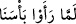

almayan bir) “âmenû”ya atfetmek için olup bir nevi şöyle denilmiş oluyor: “Îman ettiler,
ama bu imanları kendilerine fayda verecek değildi.” Çünkü fayda verecek îman, aksini
yapmaya gücün yettiği halde bizzat kendi tercihinle yaptığın imandır. Oysa, azabı gören
birinin îman etmekten başka hiçbir çaresi yoktur. Böyle bir îman da kendisine fayda
sağlamaz. Dünyada fayda sağlayamaması, âhirette de fayda sağlayamayacağına delildir.
“Allah’ın kulları hakkında” öteden beri “süregelen âdeti budur.”
“__WORD__ “hulüvv” kökünden “boşaldı, hâlî oldu” demektir. Hem zaman hem de mekan
için kullanılmakla birlikte geçmiş zaman tasvir edildiği için, dilciler “__WORD__: zaman
boşaldı” kavlini, “geçip gitti” mânâsına tefsir etmişlerdir. Şu demektir: Allah şiddetli
azabını bizzat görüp içine düşen birinin o an gerçekleştirdiği imanı kabul etmemeyi,
bütün kulları hakkında geçerli bir yasa haline getirmiştir. “Sünnete” lafzının
tahzir/sakındırma babından mansup olması da câiz olup, o zaman ibare: “__WORD__ :
Allah’ın önceki bütün tekzipçilere hep aynı şekilde uyguladığı yasasından sakının!”
şeklinde düşünülür.
“Sünnet”; devamlı girilen yol ve alışkanlık manasındadır. “Sünnetullah” tabiri ise,
Allah’ın o hikmetli yolu demektir.
“İşte o zaman kâfirler hüsrana uğrayacaklardır:”
“__WORD__ lafzı, esasen mekânı göstermesi için konulmuştur. Ancak burada zamanı
göstermektedir. Çünkü bununla “__WORD__ : şiddetli azabımızı gördüklerinde”
ifadesine işaret edildiği, “lemmâ” ise zaman ifâde ettiği için “hünâlike”den de -zaman,
tıpkı mekan gibi fiilin içinde gerçekleştiği bir zarf olması hasebiyle mekana
benzetilerek- zaman anlamı kastedilmiş olduğu anlaşılır. İbn Abbas (r. anhümâ)’nın
dediğine göre mânâ şöyledir: Yüce Allah’ın vahdaniyetini inkâr edip duranlar ve
tekzipçiler o şiddet ve azabı gördükleri vakitte hüsrana uğramış, kaybetmiş
olacaklardır!
Zeccac der ki: Kâfir her vakit hüsrandadır. Ancak hüsranda olduğunu azabı gördüğü
zaman anlayacak ve hiçbir kurtuluş (şansı) ümid edemeyecektir. Gerideki (78. âyet) gibi
“İşte o zaman bâtıl taraftarları hüsranda kaldılar” buyrulmayıp “kâfirler…”
denilmektedir. Çünkü burası yenilenmemiş bir imanla bağlantılıdır. İmanın zıddı da,
Burhânu’l-Kur’an’da belirtildiği gibi küfürdür. Demek istediği şudur: “Kâfirler”
ifadesi burada daha güzel düşmektedir. Tıpkı “bâtıl taraftarları” ifadesinin, sırrı yerinde
açıklandığı üzere, oraya daha güzel düştüğü gibi.
Azap görüldüğü veya hayattan ümit kesildiği anda gerçekleştirilen iman-ı ye’s ve be’s
hakkında bazı açıklamalar vardır. Hangisinin daha uygun olduğunu anlayabilmen için
bunları sana nakledeyim:
Emâlî’de şöyle der:
Makbul değildir, kişinin be’s ânındaki imanı
Çünkü kalmamıştır kendisî’çün hiç, amel imkânı.